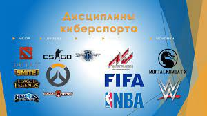

Киберспортивные дисциплины
В киберспорте существуют киберспортивные же дисциплины – их множество,
выделить все не представляется возможным.
Каждая дисциплина – это одноименная игра, в которой между собой сражаются
участники соревнований.

Приведем небольшой небольшой список
самых популярных, высокооплачиваемых и востребованных дисциплин
League of Legends (1-е место рейтинга Newzoo)
Counter-Strike: Global Offensive (5-е место)
Dota 2 (11-е место)
Heroes of the Storm (14-е место)
StarCraft 2 (20-е место)
FIFA (не входит в топ-20)
Halo 5 (не входит в топ-20)
От 2 до 17 миллионов.
Киберспорт – это спорт, настоящий и официально зарегистрированный.
Поэтому он имеет определенные дисциплины – выделить все не удастся, но можно определить основные категории игр!
- Шутеры (Counter-Strike)
- Стратегии (Dota 2, StarCraft)
- Файтинги (Mortal Kombat)
- Симуляторы (FIFA, NBA2K)
понятие киберспорта не означает, что любая игра может стать дисциплиной – отнюдь.
По каким же критериям отбираются игры для внесения в список киберспортивных дисциплин?
Таких параметров несколько – рекомендуем обратить внимание:
- Определенные правила и цель;
- Факт соревновательности – между командами или игроками по отдельности;
- Существование игровой механики – нужно сделать определенные действия, чтобы получить определенный результат;
- Невозможность заплатить за упрощение игрового процесса.
В 70-е годы XX века в Стэнфордском университете проходят первые соревнования по компьютерной игре Spacewar. Это событие
проходило в одной из компьютерных лабораторий университета, а первых участников и зрителей заманивали туда бесплатным пивом.
В 1980 году уже около десяти тысяч геймеров из США состязались на чемпионате по Space Invaders.
В 1980-е годы электронный спорт в основном развивался на базе только что появившихся игровых приставок. С момента выхода Nintendo
и Sega Genesis, многие компании стали вкладывать солидные средства в дело приобщения людей к видеоиграм.
Серьезным прорывом в распространении компьютерных игр стали 90-е годы, появление интернета дало серьезный толчек в развитии видеоигр.
Участники получили возможность устраивать между собой соревнования по Quake или Warcraft.